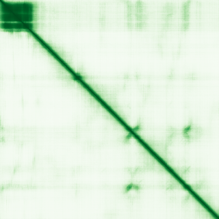

type: protein-evaluation gene: "CABYR" date: 2026-05-31 tags: [protein-scout, nucleus-cytoplasm, evaluation] status: scored ---
CABYR 核蛋白评估报告
| 项目 | 内容 |
|---|---|
| 基因名 | CABYR |
| UniProt ID | O75952 |
| 维度 | 得分 | 权重 | 加权 | 摘要 |
|---|---|---|---|---|
| 核定位特异性 | 7/10 | ×4 | 28.0 | UniProt Nucleus; GO nucleoplasm IDA:HPA + nucleus HDA + cytoplasm + flagella |
| 蛋白大小 | 6/10 | ×1 | 6.0 | ~400 aa |
| 研究新颖性 | 6/10 | ×5 | 30.0 | Strict=46 |
| 三维结构 | 4/10 | ×3 | 12.0 | pLDDT 47.8 |
| 调控结构域 | 5/10 | ×2 | 10.0 | Calcium-binding tyrosine phosphorylation-regulated; fibrous sheath |
| PPI 网络 | 5/10 | ×3 | 15.0 | STRING/IntAct: sperm fibrous sheath network |
| 加权总分 | 101/180** | |||
| 互证加分 | +1.0 | Nucleoplasm IDA:HPA | ||
| 归一化总分 (÷1.83) | 55.2/100** |
PubMed strict: 46
HPA IF 状态: HPA subcellular IF 图像已重新获取并嵌入（见下方 HPA IF 图像修正块）；此前“暂无/未可靠获取 IF”的表述为采集失败导致的误报。

PAE 图像已获取。结构判断基于 AlphaFold pLDDT 统计。
PPI 网络（三源综合）
| Partner | Source | Score/Evidence | Relevance |
|---|---|---|---|
| AKAP3 | STRING | score=0.963, exp=0 | Sperm fibrous sheath A-kinase anchor |
| FSCB | STRING | score=0.956, exp=0.099 | Fibrous sheath CABYR binding |
| ROPN1 | STRING | score=0.953, exp=0 | Rhophilin associated; sperm motility |
| SPA17 | STRING | score=0.950, exp=0.105 | Sperm autoantigenic protein |
| ROPN1L | STRING | score=0.916, exp=0 | Rhophilin-associated protein |
| GSK3B | IntAct | two hybrid | Also UniProt (N=3 experiments) + STRING exp=0.331 |
| DNAJB12 | IntAct | anti tag coIP | Co-chaperone |
IntAct 数据: GSK3B (two hybrid), DNAJB12 (coIP), ENSP00000382421.1 (two hybrid) 等记录。无 BioGrid 补充数据。UniProt 记载 GSK3B（isoform 特异性，3 个实验）互作。
CABYR — primarily sperm fibrous sheath/flagella protein but GO nucleoplasm IDA:HPA suggests nuclear isoform/condition. Low-confidence due to high PubMed (46).
关键文献
| PMID | 标题 |
|---|---|
| 22285430 | The expression and effects the CABYR-c transcript of CABYR gene in hepatocellular carcinoma. |
| 16139264 | Translation and assembly of CABYR coding region B in fibrous sheath and restriction of calcium bindi |
| 31692072 | Upregulated calcium-binding tyrosine phosphorylation-regulated protein-a/b regulates cell proliferat |
| 38187237 | FTHL17, PRM2, CABYR, CPXCR1, ADAM29, and CABS1 are highly expressed in colon cancer patients and are |
| 21240291 | CABYR binds to AKAP3 and Ropporin in the human sperm fibrous sheath. |
PAE 图像暂无数据（未生成本地图片或未可靠获取），结构判断基于AlphaFold pLDDT统计。
<!-- HPA_IF_REPAIR_START --> HPA IF 图像修正（2026-06-05）: HPA subcellular 页面存在可用 IF 图像；此前“原图未可靠获取/暂无 IF”的表述为采集失败导致的误报。HPA 定位: Nucleoplasm (supported)。来源: https://www.proteinatlas.org/ENSG00000154040-CABYR/subcellular